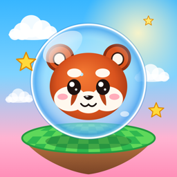

Privacy Policy
Tiltakai for iPhone · Effective November 11, 2026
Short version: Tiltakai does not collect, store or share any personal information. Nothing you do in the game is sent to the developer or anyone else.
What stays on your phone
Tiltakai saves a few things on your device so the game remembers them: your settings (controls, tilt range, volume, haptics), the family player names and critters you choose, and your high scores. This data stays on your iPhone. It is never uploaded, and it is deleted when you delete the app.
Wi-Fi play
If you choose Wi-Fi Play, Tiltakai uses Apple's peer-to-peer networking to find other phones running Tiltakai on the same local network. To show who is playing, your phone shares the player name and critter you picked, plus the game moves and scores, with those nearby phones only. Nothing passes through a server or the internet, and nothing is kept after the game. iOS asks for your permission before Tiltakai can use the local network, and you can turn this off at any time in Settings › Privacy & Security › Local Network.
What Tiltakai does not do
- No accounts or sign-in.
- No advertising, and no tracking across apps or websites.
- No analytics or third-party software development kits.
- No collection of location, contacts, photos, microphone or camera data. The motion sensors are used only to steer your ball while you play.
- No in-app purchases.
Children
Tiltakai is made for families. Because it collects no personal information from anyone, it collects none from children.
Changes
If this policy ever changes, the updated version will be posted on this page with a new effective date.
Contact
Questions about privacy? Email tiltakai@brentferree.com.